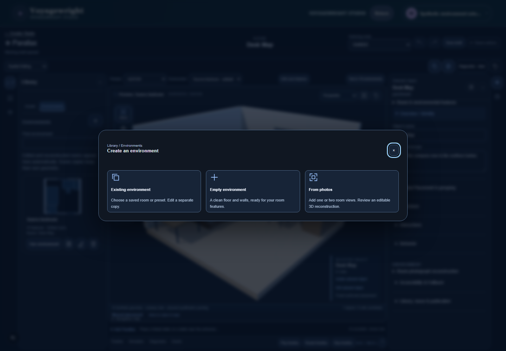
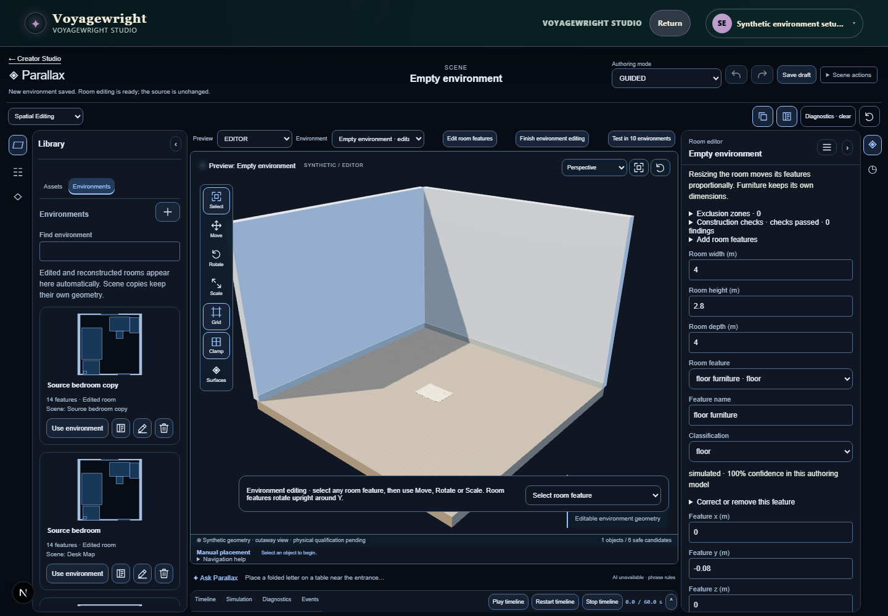
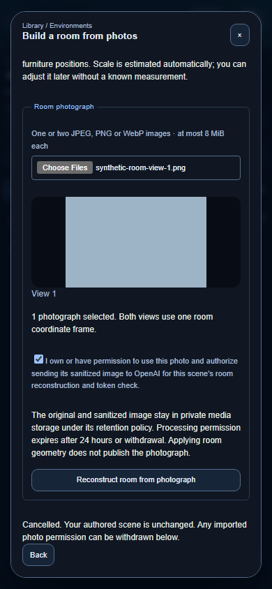
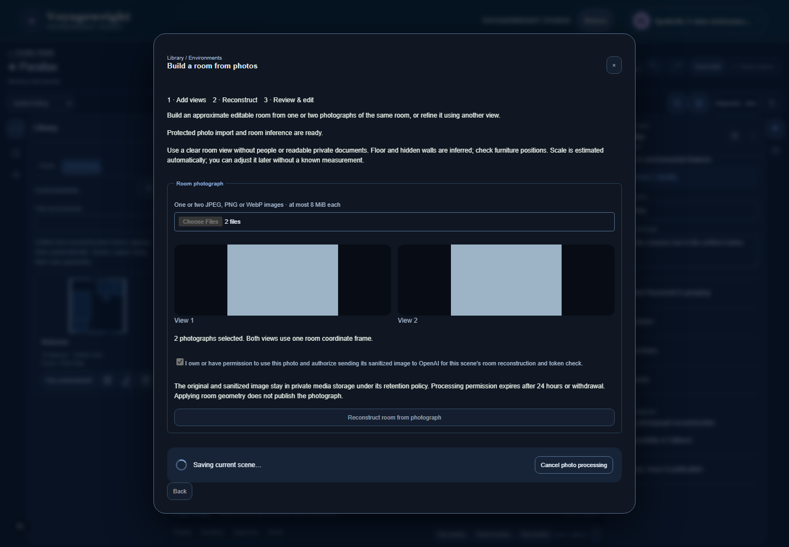
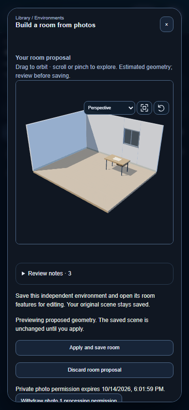
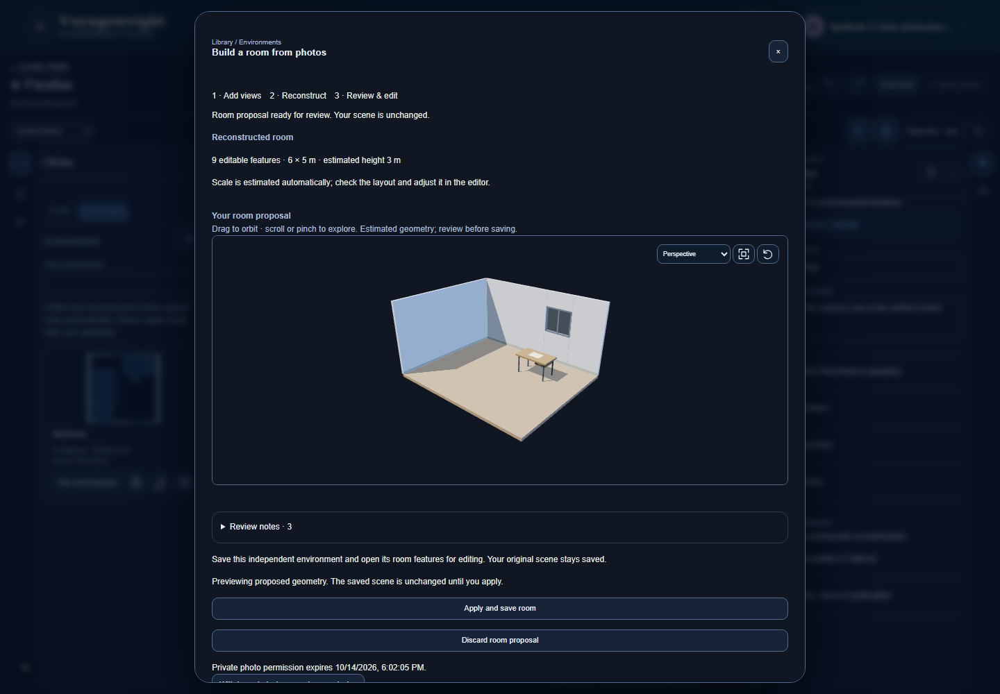
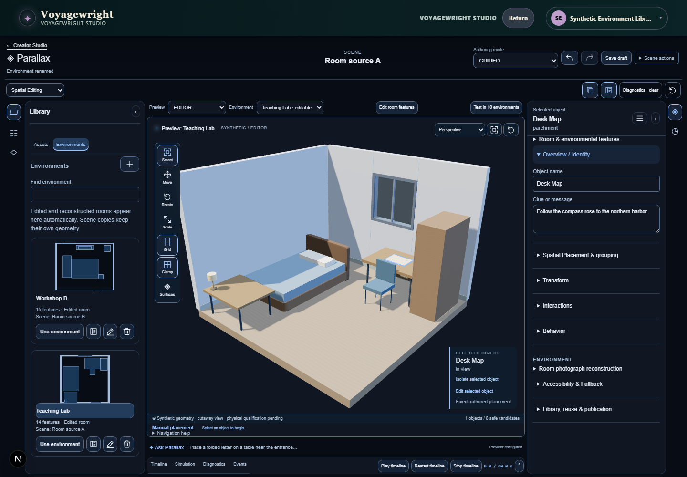
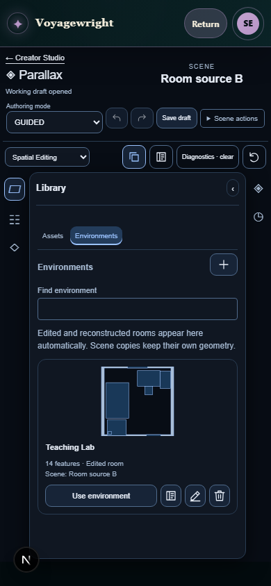

Actual Spatial Studio captures · source 3779f79f1155 · five browser journeys passed.
Unpaid synthetic inference verifies the interface, not room-photo fidelity. Phone captures are browser viewport tests, not iPhone acceptance. Owner accepted this presentation. Independent review requests deliberate orbit/zoom evidence; that recapture is separate.







